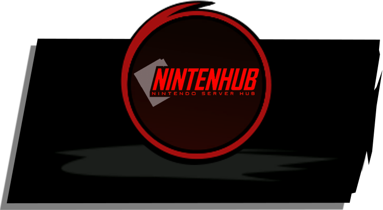
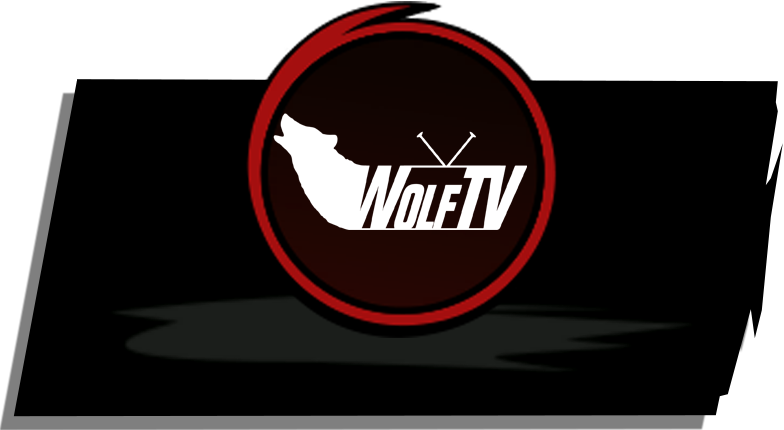

NINTENHUB
Nintenhub is a Nintendo-focused community hub that brings together fans, communities, and Nintendo-related content under one shared brand.

WOLFTV
WolfTV is a Europe-based gaming community focused on smaller titles and emerging competitive scenes. With online tournaments and community programs like Battle for the Den, Wolf Warrior, From Pack to Pack, ARMS Territorial League, and The Playing Grounds, WolfTV creates a home for players who value competition, community, and underrepresented games.